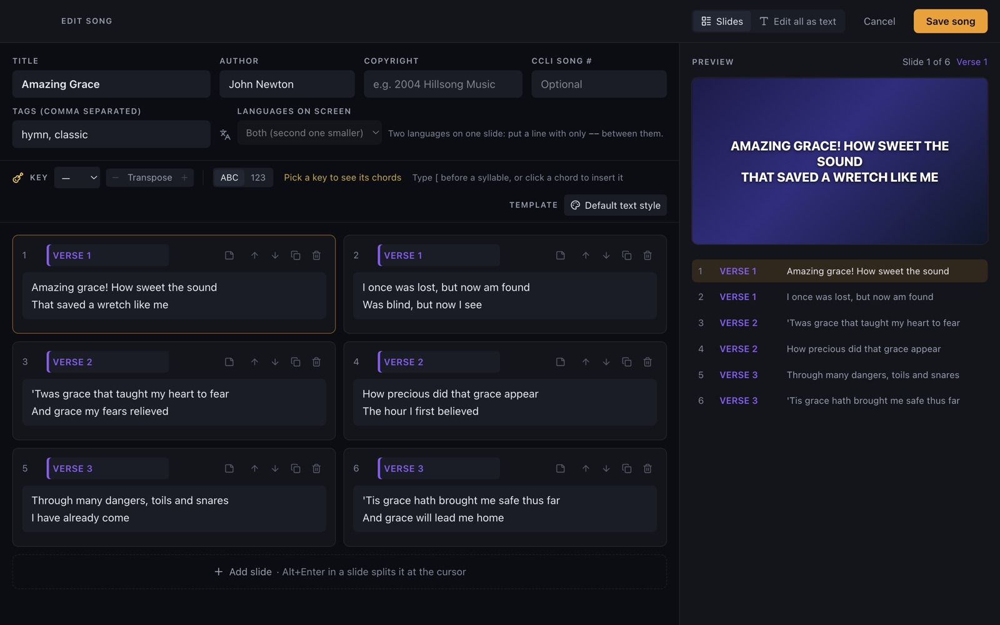
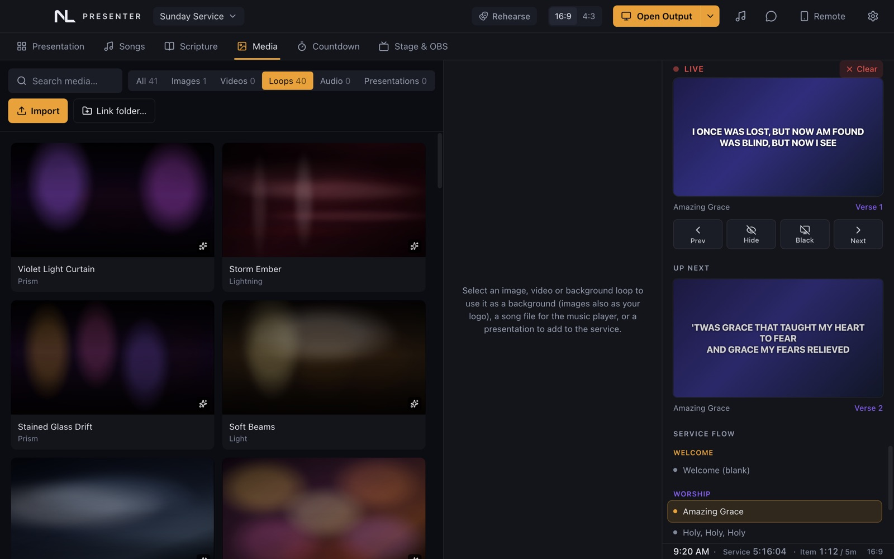
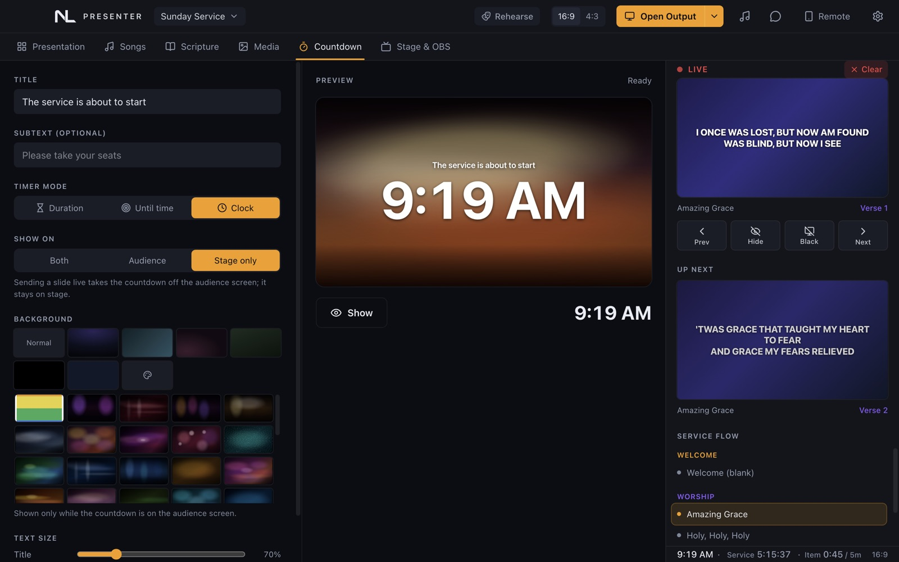

Contents
User guide
Everything you need to run worship services with NLPresenter, from the first install to Sunday morning.
What NLPresenter is
NLPresenter is a presentation app for churches. It runs on one computer (Mac or Windows) and shows song lyrics, Bible verses, pictures, videos, presentations and announcements on the projector or TV the congregation sees.
The same computer can also feed:
- a stage screen for singers and musicians, with lyrics, chords, the next line and a clock;
- a livestream overlay for OBS or vMix, with lyrics on a transparent background;
- phones and tablets on the church Wi-Fi, as remotes, stage screens or extra audience screens.
It is free, needs no account or licence key, and works without the internet. Your songs, services and settings stay on your computer. The internet is only used when you ask for it: to install Bible translations or search for song lyrics.
NLPresenter is developed by Ryan Baguasan.
Download and install
Download the installer for your computer from the releases page.
| Computer | File | Notes |
|---|---|---|
| Mac (Apple silicon or Intel) | .dmg | macOS 12 (Monterey) or newer. |
| Windows | .exe | Windows 10 or 11, 64-bit. |
Mac
- Open the
.dmgfile and drag NLPresenter into Applications. - Open NLPresenter from Applications. If macOS says it can't check the app for malicious software, open System Settings → Privacy & Security, scroll down and click Open Anyway. You only need to do this once.
- The first time you add a camera item, macOS asks for camera access. Click Allow.
Windows
- Run the
.exefile. It installs and opens NLPresenter by itself. - If Windows shows “Windows protected your PC”, click More info → Run anyway.
- If Windows asks whether NLPresenter may use the network, allow private networks. Phone remotes and stage tablets need this.
Install the new version over the old one. Your songs, services, Bibles and media are kept: they are stored separately from the app.
Quick start
This gets you from a fresh install to a working service in about ten minutes.
1. Connect the projector
Plug the projector or TV into the computer and set it as an extended display, not mirrored:
- Mac: System Settings → Displays → choose the projector → Use as: Extended display.
- Windows: press Win+P and choose Extend.
The first-run checklist on the Presentation tab can help you with this and the next steps. Click Show me on any step.
2. Add some songs
Open the Songs tab and click New song. Type a title and paste the lyrics. Put a blank
line between slides and a heading such as [Chorus] above each section. Click
Save song.
No time to type? Find a song searches for the lyrics online. See Find and import songs.
3. Build the service
In the Songs tab, double-click a song (or select it and press Enter) to add it to the service. In the
Scripture tab, type a reference such as ps 23, select the verses and click
Add to service. The Presentation tab shows the full order.
4. Choose a background
At the bottom left of the Presentation tab, click one of the backgrounds. To use your own picture or video, import it in the Media tab first.
5. Rehearse, then go live
Click Rehearse in the top bar and click through the service. Nothing changes on the projector while you rehearse. Click End rehearsal when you're done.
When it's time, click Open Output. The projector shows the live slide. Click a slide, or press → or Space to move forward and ← to go back.
The main window

Top bar
| Control | What it does |
|---|---|
| Service name | Opens the service menu: switch, create, copy or print services. See Services. |
| Rehearse | Practise the service while the screens stay as they are. See Rehearsal. |
| 16:9 / 4:3 | The shape of your projector picture. |
| Open Output | Opens the audience screen on the projector. The ▾ arrow chooses the display and sets up wireless screens. |
| ♫ | The music player. |
| Speech bubble | Chat with people using the phone remote. |
| Remote | Turns on phone remotes, stage tablets and the livestream overlay. |
| Gear | Settings, backup and restore. |
Tabs
Presentation (the service), Songs, Scripture, Media, Countdown and Stage & OBS. Switch with F1–F6 or ⌘/Ctrl+1–6.
Live panel
The right-hand column is always visible, whatever tab you're on:
- Live: exactly what the audience sees, with Clear to empty the screen.
- Prev, Hide, Black, Next: Hide removes the words but keeps the background. Black blacks out the whole screen.
- Up next: the slide that comes next.
- Service flow: the whole service. Click an item to jump to it.
- Clock and timers at the bottom: the time, how long the service has been running, and how long the current item has been on (amber when it runs past its planned length).
Services
A service is one order of worship, for example “Sunday Service – 16 Nov”. Click the service name in the top bar to open the service menu:
- New service: an empty service dated next Sunday.
- Copy for next week: the same order with fresh copies of each song. Handy when most of the service stays the same.
- Rename, change the date, or delete a service.
- Print / PDF… and Sunday check… (see Printing and Sunday check).
NLPresenter saves as you work, so there is no Save button. It reopens the last service you had open.
The service order
The left column of the Presentation tab lists the items in the service. Drag items to reorder them.
Adding items
- Songs: the ♫ button above the list, or double-click a song in the Songs tab.
- Bible passages: from the Scripture tab.
- Pictures and videos: select them in the Media tab and click Add to service, or drop files on the service order. Several pictures become one slideshow.
- The + button adds a section header, text slides, a presentation, a website or vdo.ninja feed, or a camera.
Section headers
Headers such as “Opening”, “Worship” or “Offering” group the items under them. Click a header to fold it, double-click to rename it, and pick a colour. Dragging a header moves its whole group. Headers are skipped when you press Next.
Planned length
Hover over an item and click the clock icon to give it a planned length in minutes. The list shows the total for the service and each section, and the item timer turns amber when an item runs long.
Undo
⌘/Ctrl+Z undoes changes to the service order, and Shift+⌘/Ctrl+Z redoes them. Removing an item also shows an Undo button.
Going live
Select an item in the service order to see its slides in the middle. Then:
- Click a slide to show it on the screens. The live slide has a red border.
- Press →, Space or Page Down for the next slide, and ← or Page Up for the previous one. At the end of an item, Next goes on to the next item.
- ` or . blacks out the screen. H hides the words. Esc clears the screen.
Jump straight to a section
While a song is live, press C for the next chorus, B or R for the bridge, P for the pre-chorus, E for the ending, or V then a number for that verse. Type a slide number and press Enter to go to that slide.
Preview first
Switch the slide grid from Go live to Preview first if you'd rather check a slide before the congregation sees it. A click then puts the slide in a Preview box that only you see. Double-click, press Enter or click Go live to send it.
Slide grid tools
- Edit song: opens the song editor.
- Arrange: changes the order of a song's sections for this service only. Drag the section chips, + repeats a section, × removes it.
- Look: a saved text style for this item. See Text style and looks.
- Timer: moves to the next slide by itself every few seconds (good for announcement loops).
- ⋯: notes for the team (printed on the run sheet, never shown on screen), slides per row, and the background for this item.
- Guitar control (songs with chords): change the key for tonight only. The band's chords on the stage screen change; the library song doesn't.
Search everything
⌘/Ctrl+K opens a search box for service items, songs, Bible verses
(jn 3:16) and commands. Enter shows the result live; Alt+Enter adds it
to the service.
Projector and screens
The audience screen
Click Open Output to open the audience screen full screen on the projector. Click the ▾ arrow beside it to choose which display to use. With only one display connected, the output opens in a window so you can test.
If the projector cable comes loose, NLPresenter waits for it and reopens the output on its own when the projector comes back.
Wireless audience screens
Any TV, laptop or tablet with a web browser on the same network can mirror the projector. In the Open Output ▾ menu,
choose Wireless audience screens and open the address it shows on that device
(it looks like http://192.168.1.20:4777/#/display). Tap the screen once to go full screen.
Crash recovery
If the computer restarts or the app closes unexpectedly, NLPresenter offers to resume where you left off: the same item, the same slide, with the output on the same display.
Rehearsal and Sunday check
Rehearsal mode
Click Rehearse in the top bar. You can now click through the whole service while the projector, stage screens, livestream and phones keep showing what they showed before. Phone remote buttons are paused.
Turn on Stage screens follow to let the band practise with lyrics and chords on the stage screen while the projector stays put. Click End rehearsal to return to normal.
Sunday check
Service menu → Sunday check…. It also opens by itself the first time you rehearse each day. It looks for:
- pictures or videos that have been moved or deleted;
- items with no slides, and slides whose text is too small to read;
- whether the projector is connected and the output is open;
- phone sharing being off when you've used remotes before;
- low disk space, an old backup, and a service planned longer than 90 minutes.
Most problems have a button to fix them right there.
Songs

- Search by title, author, tag or any line of the lyrics.
- Tags such as “hymn”, “fast” or “Christmas” filter the list.
- Sort by title, last used or most used. Each song shows when it was last used.
- ↑/↓ select a song, Enter adds it to the service, E edits it.
- Usage report lists how often each song was used over a period, with CCLI numbers, and exports to a spreadsheet (CSV).
- Export saves the songs in the current list as text files.
Song editor

Click New song, or select a song and click Edit. Each card is one slide.
- Labels (Verse 1, Chorus, Bridge…) are coloured by type and let you jump to sections during the service.
- Edit all as text shows the whole song as plain text. Put a blank line between slides and a heading in square brackets above each section:
[Verse 1] Amazing grace! How sweet the sound That saved a wretch like me I once was lost, but now am found Was blind, but now I see [Chorus] ...
- Alt+Enter in a slide splits it in two at the cursor.
- Notes for stage: click the note icon on a slide to add a cue for the band (“Build”, “Drums out”). It shows on the stage screen only.
- Template: a look just for this song.
- Copyright and CCLI song # feed the copyright footer. See Copyright and CCLI.
Two languages on one slide
Put a line with only -- between the two languages. The second language shows smaller and in italics.
Languages on screen chooses both, only the first, or only the second.
Amazing grace! How sweet the sound -- Kahanga-hangang biyaya
A dot on a slide means its text will be shrunk a lot to fit. Split long slides so they stay readable.
Chords
Chords go in square brackets right before the syllable they fall on:
[G]Amazing [C]grace, how [G]sweet the sound
- Any chord works:
Bbmaj9,F#m7b5,D/F#. So do Nashville numbers like[1] [4] [6m]. - A line with only chords (
[G] [C] | [D] x2) is an instrumental line. - Pasting a chord sheet with the chords on the line above the words converts it automatically.
- Pick the song's Key, and use Transpose −/+ to rewrite all the chords in a new key.
- The chord palette shows the chords in the song's key. Click one to insert it at the cursor.
Chords only ever appear on stage screens. The projector, livestream and phone remote always show the words alone. Stage & OBS tab → Chords: Off, Standard (G, C, D) or Nashville (1, 4, 5).
Find and import songs
Search online
Songs tab → Find a song. When a library search finds nothing, a Search online button does the same for what you typed.
- Type the title. Adding the artist helps, for example “Way Maker Sinach”.
- Click a result to preview it. A badge marks songs you already have.
- Click Open in song editor. Check the lyrics and section names, add chords if you like, and save.
Online results are lyrics only, without chords. NLPresenter guesses the verses and chorus from what repeats, so expect to rename a section now and then.
SongSelect and song files
Search SongSelect opens CCLI SongSelect in your browser (you need your church's SongSelect account). Download the song there, then drop the file onto the Find a song window or use Import in the Songs tab. These files are read with their chords, key, authors and CCLI number:
- ChordPro:
.cho,.chordpro,.chopro,.crd,.pro - SongSelect lyrics (
.txt) and.usrfiles - Plain text files exported from NLPresenter
Scripture

Finding verses
- Type a reference:
jn 3:16-18,1 cor 13,ps 23 1-3,Jude 3. - Or type words you remember:
loved the world. - Or browse: pick a book, then a chapter.
Selecting and showing
- Click a verse to select it. Shift+click selects a range; ⌘/Ctrl+click adds single verses.
- Show live (or double-click, or Enter) puts them on screen. Add to service adds them to the order.
- Verses per slide: 1 to 4, or all on one slide. Turn small verse numbers on or off.
- Compare: show up to three translations at once, side by side or stacked.
- Recent and pinned: under the book list are your last 30 passages and any you pinned with ☆. Pinned passages also appear on the phone remote.
Scripture can have its own text style, separate from songs: click Text style in the Scripture tab.
Bible translations
Click the translation button at the top left of the Scripture tab.
- Built in: King James Version, American Standard Version and the Tagalog Unlocked Literal Bible.
- Browse translation library… lists about 1,300 free translations in over 1,000 languages. Click
Install to download one. Book names come in that language, so
Juan 3:16works. - Import Bible XML file… adds a Bible from a Zefania XML file.
- Hover a translation and click the pencil to change its short code (for example
NKJV). The code appears on the slides, like “John 3:16 (NKJV)”.
Many modern translations are under copyright. Only import Bibles your church has the right to use.
Media and backgrounds

Importing
Click Import or drag files onto the Media tab.
- Pictures: JPG, PNG, GIF, WebP, AVIF, BMP.
- Videos: MP4, WebM, MOV.
- Music for the player: MP3, M4A, AAC, WAV, OGG, Opus, FLAC.
- Background loop packs (
.json).
Imported files are copied into NLPresenter, so you can move or delete the originals. Link folder… lists a folder instead without copying it. New files in that folder show up each time you open the Media tab.
Using a picture or video
Select a file, then use it as:
- the default background behind all slides;
- the background of one service item;
- a service item of its own (a slideshow of pictures, or a video that plays once);
- the church logo in a corner of the screen (pictures only).
On the screen decides how a picture or video fills the screen: Fill screen (crops the edges), Fit to screen (adds bars), Stretch, or Original size. Settings → New pictures & videos sets the choice for new files.
Video controls
When a video is live, the live panel shows play/pause, start over, a seek bar with time left, sound and loop.
Background loops
Loops are moving backgrounds drawn by the app itself, so they use very little computer power and never cover the words. Find them under the Loops filter.
Presentations
Presentation tab → + → Presentation, or drop the file on the Media tab. Each page becomes a slide.
- PDF works on every computer.
- PowerPoint, Keynote and OpenDocument files need PowerPoint, Keynote or LibreOffice installed to convert them. If none is installed, save the file as a PDF and import that.
- Speaker notes from PowerPoint files show on the stage screen.
Text slides
For announcements and sermon points: Presentation tab → + → Text slides, then Edit slides. Each slide has an optional title and body text. Pasting several paragraphs makes several slides.
Websites and cameras
Presentation tab → + → Website / vdo.ninja or Camera / capture device. Show one as its own item, behind the lyrics of an item, or as the default background.
- Websites show at full projector size. Use a vdo.ninja link to bring in a phone camera or a remote guest.
- Cameras can be a webcam, USB camera or capture card on this computer.
- Sound is off at first. Turn it on to play the sound on the audience screen.
Text style and looks
Click Text style (Presentation tab) to change how words look on screen. Changes show at once on every screen.
- Text: font, size, weight, colour, alignment, margins, line height, letter spacing, capitals and italics.
- Effects: shadow, outline, glow, and a background behind the text: behind each line, as one block, or as a full-width band.
- Transition: how slides change: cut, fade, rise or zoom, and how fast.
- Logo: corner, size and opacity of your church logo.
Looks
A look is a saved text style, with or without a background. Classic, Lower third, Clean and Bold come built in; Save as template… saves your own. Give a song its own look in the song editor, or one service item its own look with Look in the slide grid.
Label colours
Slide labels are coloured by type: verses violet, choruses blue, bridges amber, and so on. Click a label in the slide grid to change its colour.
Countdown

- Timer mode: a duration (5:00), until a time of day (10:00 AM), or a clock.
- Show on: the audience screen, the stage, or both.
- A title, an optional line under it, text sizes and its own background.
- Overtime keeps counting up in red after zero.
- At 0:00, go live with the first item starts the service on time by itself.
When you show a slide, the countdown leaves the audience screen but stays on the stage screen.
Stage display

The stage screen faces the singers and musicians. It shows the current lyrics large, chords, the next line, the clock and timers.
Connecting it
- With a cable: a monitor plugged into the computer. Choose it in the Stage & OBS tab.
- Wirelessly: any phone or tablet on the same network. Click Remote in the top bar, start sharing, and scan the stage QR code in the Stage & OBS tab. The screen stays awake.
Layouts
- Standard: current and next slide.
- Lyrics only: big words without chords, for singers.
- Chords focus: big chords and a thin next-line strip, for the band.
Each tablet can choose its own layout and chords setting from the menu in its corner.
Messages
Type a message such as “Repeat chorus” and press Enter, or click a quick message. It flashes on the stage screen. Turn on Flash until cleared for urgent ones.
Options
Show or hide the next slide, the clock, the service timer, item time left, the song title and the next song. You can also show a small copy of the audience screen and the second language of bilingual songs.
Livestream overlay
The overlay puts lyrics and Bible verses on your livestream over a transparent background.
- Click Remote in the top bar and start sharing.
- Stage & OBS tab → Broadcast overlay → copy the link.
- In OBS, add a Browser source with that link, at 1920 × 1080. vMix works the same way with a Web Browser input.
Choose where the words sit (lower third, centre or top), whether to add a dark band behind them, and whether to show the Bible reference and the countdown.
Name captions
Show a name and title such as “Ptr. Juan Dela Cruz · Senior Pastor” in the lower left. Save captions you use often, hide them after a few seconds, and show them on the livestream only or on the audience screen too.
Phone remote

- Make sure the phone is on the same Wi-Fi network as the computer.
- Click Remote in the top bar → Start network sharing.
- Scan the QR code with the phone's camera and enter the 4-digit PIN.
The remote shows the live slide and has big Previous, Hide, Black and Next buttons. Its tabs:
- Flow: the service order. Tap an item to jump to it.
- Slides: the slides of the live item.
- Bible: search for verses and show them, or tap a pinned passage.
- Chat: message the operator. Messages pop up beside the chat icon in the top bar, and the operator can reply. Quick-reply buttons can be set in Settings → Phone remote.
A new PIN is made each time you start sharing. Too many wrong PINs lock that phone out for a minute.
Stream Deck and clickers
Presentation clickers work out of the box: they send Page Down/Page Up, or . for black.
For a Stream Deck (through Bitfocus Companion) or other hardware buttons, turn on Allow control API in the Remote panel. Then send web requests to the computer (replace the address and PIN with your own):
POST http://192.168.1.20:4777/api/next?pin=1234 POST http://192.168.1.20:4777/api/prev?pin=1234 POST http://192.168.1.20:4777/api/black?pin=1234 POST http://192.168.1.20:4777/api/hideText?pin=1234 POST http://192.168.1.20:4777/api/clear?pin=1234 POST http://192.168.1.20:4777/api/goto?pin=1234&item=3&slide=2 GET http://192.168.1.20:4777/api/status
Items are numbered from 1, not counting section headers. While the control API is on, the PIN stays the same between sessions so your buttons keep working.
Printing
Service menu → Print / PDF…. Print it or save it as a PDF:
- Run sheet: the numbered order of service with keys, slide counts and team notes.
- Lyrics: the run sheet plus all the words.
- Chord charts: one song per page with chords above the words, in tonight's key, as letters or Nashville numbers.
The church name from Settings → Church appears at the top.
Copyright and CCLI
If your church has a CCLI licence, enter its number in Settings → Church. Then fill in Copyright and CCLI song # for each song in the song editor.
A small footer such as “© 2020 Example Music · CCLI Song #1234567 · CCLI Licence #654321” appears at the lower left of the audience screen. Show it on the first and last slide of a song (the default), on every slide, or not at all, and optionally on the livestream too. It never shows on stage screens.
NLPresenter records the first time each song is used in a service each day (not during rehearsal). Songs tab → Usage report lists the songs used in a period, with their CCLI numbers, ready for your CCLI report.
Music player
Click ♫ in the top bar for a small player you can drag anywhere. Add songs from the media library, drag them into order, and use shuffle, repeat and volume. Music plays through the computer's sound output, and the playlist is remembered.
Backup and restore
- Automatic backups are on from the start. NLPresenter backs up once a day while it's open, and when you quit, keeping the newest 10. Settings → Automatic backups changes the folder. A folder that syncs to the cloud (iCloud Drive, OneDrive, Google Drive) protects you if the computer is lost.
- Full backup (Settings → Backup & restore) saves one
.nlbackupfile with all your songs, services, settings, imported Bibles, loops and media. - Restore adds whatever is missing from a backup and skips what you already have, so it never deletes anything.
Make a full backup on the old computer, install NLPresenter on the new one, and restore the backup there.
Settings
Click the gear in the top bar.
| Section | What's there |
|---|---|
| Appearance | Interface language, interface size (80–125%) and accent colour. |
| Church | Church name, CCLI licence number and the copyright footer. |
| Display | Display options, including Video decoding: CPU only for computers where videos flicker. |
| New pictures & videos | How newly imported pictures and videos fill the screen. |
| Phone remote | Quick-reply buttons for the chat. |
| Bible texts | The translations you have installed. |
| Backup & restore | Full backup and restore. |
| Automatic backups | Turn them on or off and choose the folder. |
Languages
The app comes in English, Tagalog, Spanish, Portuguese, French, Italian, Korean, Chinese (Simplified), Indonesian, Hindi, Tamil, Russian and Ukrainian. Only the app's own buttons and labels change. Your songs, Bible text and service names stay as you typed them. Phones and tablets can pick their own language.
⌘/Ctrl+= and - make the interface bigger or smaller; ⌘/Ctrl+0 returns to 100%.
Keyboard shortcuts
On a Mac use ⌘; on Windows use Ctrl. Press ? in the app to see this list. Live keys do nothing while you're typing in a box or while a dialog is open.
Live
| Keys | Action |
|---|---|
| → Space Page Down | Next slide |
| ← Page Up | Previous slide |
| ↓ ↑ | Next / previous slide (except on the Songs, Scripture and Media tabs) |
| ` or . | Black screen on / off |
| H | Hide the words / show them again |
| Esc | Clear the screen (or close a dialog) |
Jump within a song
| Keys | Action |
|---|---|
| C | Next chorus |
| V then 1–9 | That verse |
| P | Pre-chorus |
| B or R | Bridge |
| E | Ending, tag or outro |
| Number, then Enter | That slide (e.g. 12 Enter) |
Spanish and Tagalog section names count too (Coro, Verso, Puente, Talata, Tulay…).
Everywhere
| Keys | Action |
|---|---|
| F1–F6 or ⌘ 1–6 | Switch tab (Presentation, Songs, Scripture, Media, Countdown, Stage & OBS) |
| ⌘ K | Search songs, verses, items and commands |
| ⌘ Z | Undo a change to the service order |
| Shift ⌘ Z | Redo |
| ⌘ = / - / 0 | Interface bigger / smaller / 100% |
| ? | Show all shortcuts |
Songs tab
| Keys | Action |
|---|---|
| ↑ ↓ | Select a song |
| Enter | Add it to the service |
| E | Edit it |
| Delete | Delete it |
Questions and answers
Does it need the internet?
No. Everything works offline. You only need the internet to install Bible translations from the library or to search for song lyrics.
The output opens on the wrong screen.
Click the ▾ beside Open Output and choose the right display. Also check that the projector is set to extend your desktop, not mirror it.
My phone can't connect to the remote.
- The phone must be on the same Wi-Fi as the computer, not on mobile data or a guest network.
- On Windows, allow NLPresenter through the firewall for private networks.
- Some church networks block devices from talking to each other. A small router or the computer's hotspot works around this.
Videos flicker or stutter.
Turn on Settings → Display → Video decoding: CPU only and restart NLPresenter.
A PowerPoint file won't import.
PowerPoint, Keynote or LibreOffice must be installed to convert it. If none is, open the file elsewhere, save it as a PDF, and import the PDF.
Where is my data stored?
On your computer only:
- Mac:
~/Library/Application Support/NLPresenter - Windows:
%APPDATA%\NLPresenter
Use backups rather than copying these folders by hand.
Can the congregation see the chords?
No. Chords only ever show on stage screens.